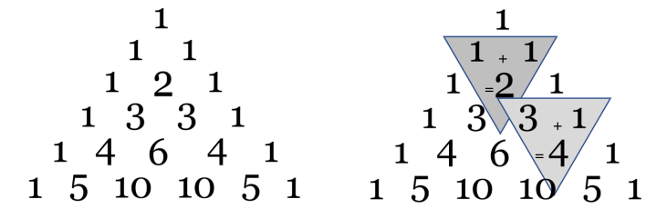
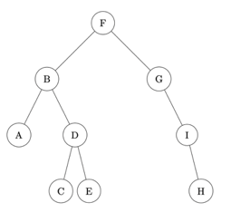

Annales des épreuves pratiques
Sujet 01
Exercice 01.1
Écrire une fonction recherche qui prend en paramètres caractere, un caractère, et
mot, une chaîne de caractères, et qui renvoie le nombre d’occurrences de caractere
dans mot, c’est-à-dire le nombre de fois où caractere apparaît dans mot.
Exemples :
>>> recherche('e', "sciences")
2
>>> recherche('i',"mississippi")
4
>>> recherche('a',"mississippi")
0
Exercice 01.2
On s’intéresse à un algorithme récursif qui permet de rendre la monnaie à partir d’une
liste donnée de valeurs de pièces et de billets - le système monétaire est donné sous
forme d’une liste pieces=[100, 50, 20, 10, 5, 2, 1] - (on supposera qu’il n’y a
pas de limitation quant à leur nombre), on cherche à donner la liste de pièces à rendre
pour une somme donnée en argument.
Compléter le code Python ci-dessous de la fonction rendu_glouton qui implémente cet
algorithme et renvoie la liste des pièces à rendre.
1 2 3 4 5 6 7 8 9 10 11 | |
>>>rendu_glouton(68,[],0)
[50, 10, 5, 2, 1]
>>>rendu_glouton(291,[],0)
[100, 100, 50, 20, 20, 1]
Sujet 02
Exercice 02.1
Soit le couple (note,coefficient):
noteest un nombre de type flottant (float) compris entre 0 et 20 ;coefficientest un nombre entier positif.
Les résultats aux évaluations d'un élève sont regroupés dans une liste composée de
couples (note,coefficient).
Écrire une fonction moyenne qui renvoie la moyenne pondérée de cette liste donnée en paramètre.
Par exemple, l’expression moyenne([(15,2),(9,1),(12,3)]) devra renvoyer le
résultat du calcul suivant :
\(\dfrac{2 \times 15 + 1 \times 9 + 3 \times 12 }{2+1+3}=12,5\)
Exercice 02.2
On cherche à déterminer les valeurs du triangle de Pascal. Dans ce tableau de forme triangulaire, chaque ligne commence et se termine par le nombre 1. Par ailleurs, la valeur qui occupe une case située à l’intérieur du tableau s’obtient en ajoutant les valeurs des deux cases situées juste au-dessus, comme l’indique la figure suivante :

Compléter la fonction pascal ci-après. Elle doit renvoyer une liste correspondant au
triangle de Pascal de la ligne 1 à la ligne n où n est un nombre entier supérieur ou égal à
2 (le tableau sera contenu dans la variable C). La variable Ck doit, quant à elle, contenir,
à l’étape numéro k, la k-ième ligne du tableau.
1 2 3 4 5 6 7 8 9 | |
Pour n = 4, voici ce qu'on devra obtenir :
>>> pascal(4)
[[1], [1, 1], [1, 2, 1], [1, 3, 3, 1], [1, 4, 6, 4, 1]]
n = 5, voici ce qu'on devra obtenir :
>>> pascal(5)
[[1], [1, 1], [1, 2, 1], [1, 3, 3, 1], [1, 4, 6, 4, 1], [1, 5, 10, 10, 5, 1]]
Sujet 03
Exercice 03.1
Le codage par différence (delta encoding en anglais) permet de compresser un tableau de données en indiquant pour chaque donnée, sa différence avec la précédente (plutôt que la donnée elle-même). On se retrouve alors avec un tableau de données assez petites nécessitant moins de place en mémoire. Cette méthode se révèle efficace lorsque les valeurs consécutives sont proches.
Programmer la fonction delta qui prend en paramètre un tableau non vide de nombres entiers
et qui renvoie un tableau contenant les valeurs entières compressées à l’aide cette technique.
Exemples :
>>> delta([1000, 800, 802, 1000, 1003])
[1000, -200, 2, 198, 3]
>>> delta([42])
42
Exercice 03.2
Une expression arithmétique ne comportant que les quatre opérations +, −,×,÷ peut être représentée sous forme d’arbre binaire. Les nœuds internes sont des opérateurs et les feuilles sont des nombres. Dans un tel arbre, la disposition des nœuds joue le rôle des parenthèses que nous connaissons bien.

En parcourant en profondeur infixe l’arbre binaire ci-dessus, on retrouve l’expression notée habituellement :
La classe Noeud ci-après permet d’implémenter une structure
d’arbre binaire.
Compléter la fonction récursive expression_infixe qui prend
en paramètre un objet de la classe Noeud et qui renvoie
l’expression arithmétique représentée par l’arbre binaire passé
en paramètre, sous forme d’une chaîne de caractères contenant
des parenthèses.
Résultat attendu avec l’arbre ci-dessus :
>>> e = Noeud(Noeud(Noeud(None, 3, None), '*', Noeud(Noeud(None, 8, None),
'+', Noeud(None, 7, None))), '-', Noeud(Noeud(None, 2, None), '+',
Noeud(None, 1, None)))
>>> expression_infixe(e)
'((3*(8+7))-(2+1))'
Sujet 04
Exercice 04.1
Écrire une fonction recherche qui prend en paramètre un tableau de nombres entiers
tab, et qui renvoie la liste (éventuellement vide) des couples d'entiers consécutifs
successifs qu'il peut y avoir dans tab.
Exemples :
>>> recherche([1, 4, 3, 5])
[]
>>> recherche([1, 4, 5, 3])
[(4, 5)]
>>> recherche([7, 1, 2, 5, 3, 4])
[(1, 2), (3, 4)]
>>> recherche([5, 1, 2, 3, 8, -5, -4, 7])
[(1, 2), (2, 3), (-5, -4)]
Exercice 04.2
Soit une image binaire représentée dans un tableau à 2 dimensions. Les éléments
M[i][j], appelés pixels, sont égaux soit à 0 soit à 1.
Une composante d’une image est un sous-ensemble de l’image constitué uniquement de
1 et de 0 qui sont côte à côte, soit horizontalement soit verticalement.
Par exemple, les composantes de
 sont
sont

On souhaite, à partir d’un pixel égal à 1 dans une image M, donner la valeur val à tous
les pixels de la composante à laquelle appartient ce pixel.
La fonction propager prend pour paramètre une image M, deux entiers i et j et une
valeur entière val. Elle met à la valeur val tous les pixels de la composante du pixel
M[i][j] s’il vaut 1 et ne fait rien s’il vaut 0.
Par exemple, propager(M,2,1,3) donne

Compléter le code récursif de la fonction propager donné ci-dessous :
1 2 3 4 5 6 7 8 9 10 11 12 13 14 15 16 17 18 19 20 21 | |
>>> M = [[0,0,1,0],[0,1,0,1],[1,1,1,0],[0,1,1,0]]
>>> propager(M,2,1,3)
>>> M
[[0, 0, 1, 0], [0, 3, 0, 1], [3, 3, 3, 0], [0, 3, 3, 0]]
Sujet 05
Exercice 05.1
Écrire une fonction rechercheMinMax qui prend en paramètre un tableau de nombres
non triés tab, et qui renvoie la plus petite et la plus grande valeur du tableau sous la
forme d’un dictionnaire à deux clés ‘min’ et ‘max’. Les tableaux seront représentés sous
forme de liste Python.
Exemples :
>>> tableau = [0, 1, 4, 2, -2, 9, 3, 1, 7, 1]
>>> resultat = rechercheMinMax(tableau)
>>> resultat
{'min': -2, 'max': 9}
>>> tableau = []
>>> resultat = rechercheMinMax(tableau)
>>> resultat
{'min': None, 'max': None}
Exercice 05.2
On dispose d’un programme permettant de créer un objet de type PaquetDeCarte,
selon les éléments indiqués dans le code ci-dessous.
Compléter ce code aux endroits indiqués par #A compléter, puis ajouter des
assertions dans l’initialiseur de Carte, ainsi que dans la méthode getCarteAt().
1 2 3 4 5 6 7 8 9 10 11 12 13 14 15 16 17 18 19 20 21 22 23 24 25 26 27 28 29 30 31 32 33 34 | |
>>> unPaquet = PaquetDeCarte()
>>> unPaquet.remplir()
>>> uneCarte = unPaquet.getCarteAt(20)
>>> print(uneCarte.getNom() + " de " + uneCarte.getCouleur())
6 de coeur
Sujet 06
Exercice 06.1
Écrire une fonction maxi qui prend en paramètre une liste tab de nombres entiers et renvoie un couple donnant le plus grand élément de cette liste, ainsi que l’indice de la première apparition de ce maximum dans la liste.
Exemple :
>>> maxi([1,5,6,9,1,2,3,7,9,8])
(9,3)
Exercice 06.2
La fonction recherche prend en paramètres deux chaines de caractères gene et
seq_adn et renvoie True si on retrouve gene dans seq_adn et False sinon.
Compléter le code Python ci-dessous pour qu’il implémente la fonction recherche.
1 2 3 4 5 6 7 8 9 10 11 12 13 | |
Exemples :
>>> recherche("AATC", "GTACAAATCTTGCC")
True
>>> recherche("AGTC", "GTACAAATCTTGCC")
False
Sujet 07
Exercice 07.1
Écrire une fonction conv_bin qui prend en paramètre un entier positif n et renvoie un
couple (b,bit) où :
best une liste d'entiers correspondant à la représentation binaire den;bitcorrespond aux nombre de bits qui constituentb.
Exemple :
>>> conv_bin(9)
([1,0,0,1],4)
Aide :
- l'opérateur
//donne le quotient de la division euclidienne :5//2donne2; - l'opérateur
%donne le reste de la division euclidienne :5%2donne1; appendest une méthode qui ajoute un élément à une liste existante : SoitT=[5,2,4], alorsT.append(10)ajoute10à la listeT. Ainsi,Tdevient[5,2,4,10].reverseest une méthode qui renverse les éléments d'une liste. SoitT=[5,2,4,10]. AprèsT.reverse(), la liste devient[10,4,2,5].
On remarquera qu’on récupère la représentation binaire d’un entier n en partant de la gauche en appliquant successivement les instructions :
b = n%2
n = n//2
répétées autant que nécessaire.
Exercice 07.2
La fonction tri_bulles prend en paramètre une liste T d’entiers non triés et renvoie la liste triée par ordre croissant.
Compléter le code Python ci-dessous qui implémente la fonction tri_bulles.
1 2 3 4 5 6 7 8 9 | |
Sujet 08
Exercice 08.1
Écrire une fonction recherche qui prend en paramètres elt un nombre entier et tab
un tableau de nombres entiers, et qui renvoie l’indice de la première occurrence de elt
dans tab si elt est dans tab et -1 sinon.
Exemples :
>>> recherche(1, [2, 3, 4])
-1
>>> recherche(1, [10, 12, 1, 56])
2
>>> recherche(50, [1, 50, 1])
1
>>> recherche(15, [8, 9, 10, 15])
3
Exercice 08.2
On considère la fonction insere ci-dessous qui prend en argument un entier a et un
tableau tab d'entiers triés par ordre croissant. Cette fonction insère la valeur a dans le
tableau et renvoie le nouveau tableau. Les tableaux seront représentés sous la forme de
listes python.
Sujet légèrement modifié
1 2 3 4 5 6 7 8 9 | |
Compléter la fonction insere ci-dessus.
Exemples :
>>> insere(3,[1,2,4,5])
[1, 2, 3, 4, 5]
>>> insere(10,[1,2,7,12,14,25])
[1, 2, 7, 10, 12, 14, 25]
>>> insere(1,[2,3,4])
[1, 2, 3, 4]
Sujet 09
Exercice 09.1
Soit un nombre entier supérieur ou égal à 1 :
- s'il est pair, on le divise par 2 ;
- s’il est impair, on le multiplie par 3 et on ajoute 1.
Puis on recommence ces étapes avec le nombre entier obtenu, jusqu’à ce que l’on obtienne la valeur 1.
On définit ainsi la suite \((U_n)\) par :
- \(U_0=k\), où \(k\) est un entier choisi initialement;
- \(U_{n+1} = \dfrac{U_n}{2}\) si \(U_n\) est pair;
- \(U_{n+1} = 3 \times U_n + 1\) si \(U_n\) est impair.
On admet que, quel que soit l'entier k choisi au départ, la suite finit toujours sur la valeur 1.
Écrire une fonction calcul prenant en paramètres un entier n strictement positif et qui renvoie la liste des valeurs de la suite, en partant de n et jusqu'à atteindre 1.
Exemple :
>>> calcul(7)
[7, 22, 11, 34, 17, 52, 26, 13, 40, 20, 10, 5, 16, 8, 4, 2, 1]
Exercice 09.2
On affecte à chaque lettre de l'alphabet un code selon le tableau ci-dessous :
| A | B | C | D | E | F | G | H | I | J | K | L | M | N | O | P | Q | R | S | T | U | V | W | X | Y | Z |
|---|---|---|---|---|---|---|---|---|---|---|---|---|---|---|---|---|---|---|---|---|---|---|---|---|---|
| 1 | 2 | 3 | 4 | 5 | 6 | 7 | 8 | 9 | 10 | 11 | 12 | 13 | 14 | 15 | 16 | 17 | 18 | 19 | 20 | 21 | 22 | 23 | 24 | 25 | 26 |
Pour un mot donné, on détermine d’une part son code alphabétique concaténé, obtenu par la juxtaposition des codes de chacun de ses caractères, et d’autre part, son code additionné, qui est la somme des codes de chacun de ses caractères.
Par ailleurs, on dit que ce mot est « parfait » si le code additionné divise le code concaténé.
Exemples :
-
Pour le mot
"PAUL", le code concaténé est la chaîne'1612112', soit l’entier 1 612 112. Son code additionné est l’entier 50 car 16 + 1 + 21 + 12 = 50. 50 ne divise pas l’entier 1 612 112 ; par conséquent, le mot"PAUL"n’est pas parfait. -
Pour le mot
"ALAIN", le code concaténé est la chaîne'1121914', soit l’entier 1 121 914. Le code additionné est l’entier 37 car 1 + 12 + 1 + 9 + 14 = 37. 37 divise l’entier 1 121 914 ; par conséquent, le mot"ALAIN"est parfait.
Compléter la fonction est_parfait ci-dessous qui prend comme argument une chaîne
de caractères mot (en lettres majuscules) et qui renvoie le code alphabétique concaténé,
le code additionné de mot, ainsi qu’un booléen qui indique si mot est parfait ou pas.
1 2 3 4 5 6 7 8 9 10 11 12 13 14 15 16 17 18 | |
Exemples :
>>> est_parfait("PAUL")
[50, 1612112, False]
>>> est_parfait("ALAIN")
[37, 1121914, True]
Sujet 10
Exercice 10.1
L’occurrence d’un caractère dans un phrase est le nombre de fois où ce caractère est présent.
Exemples :
- l’occurrence du caractère ‘o’ dans ‘bonjour’ est 2 ;
- l’occurrence du caractère ‘b’ dans ‘Bébé’ est 1 ;
- l’occurrence du caractère ‘B’ dans ‘Bébé’ est 1 ;
- l’occurrence du caractère ‘ ‘ dans ‘Hello world !’ est 2.
On cherche les occurrences des caractères dans une phrase. On souhaite stocker ces occurrences dans un dictionnaire dont les clefs seraient les caractères de la phrase et les valeurs l’occurrence de ces caractères.
Par exemple : avec la phrase 'Hello world !' le dictionnaire est le suivant :
{'H': 1,'e': 1,'l': 3,'o': 2,' ': 2,'w': 1,'r': 1,'d': 1,'!': 1}
Écrire une fonction occurence_lettres prenant comme paramètre une variable
phrase de type str. Cette fonction doit renvoyer un dictionnaire de type constitué des
occurrences des caractères présents dans la phrase.
Exercice 10.2
La fonction fusion prend deux listes L1, L2 d’entiers triées par ordre croissant et les
fusionne en une liste triée L12 qu’elle renvoie.
Le code Python de la fonction est
1 2 3 4 5 6 7 8 9 10 11 12 13 14 15 16 17 18 19 20 21 22 23 24 | |
Compléter le code.
Exemple :
>>> fusion([1,6,10],[0,7,8,9])
[0, 1, 6, 7, 8, 9, 10]
Sujet 11
Exercice 11.1
Écrire une fonction recherche qui prend en paramètres un tableau tab de nombres
entiers triés par ordre croissant et un nombre entier n, et qui effectue une recherche
dichotomique du nombre entier n dans le tableau non vide tab.
Cette fonction doit renvoyer un indice correspondant au nombre cherché s’il est dans le
tableau, -1 sinon.
Exemples :
>>> recherche([2, 3, 4, 5, 6], 5)
3
>>> recherche([2, 3, 4, 6, 7], 5)
-1
Exercice 11.2
Le codage de César transforme un message en changeant chaque lettre en la décalant dans l’alphabet. Par exemple, avec un décalage de 3, le A se transforme en D, le B en E, ..., le X en A, le Y en B et le Z en C. Les autres caractères (‘!’,’ ?’…) ne sont pas codés.
La fonction position_alphabet ci-dessous prend en paramètre un caractère lettre
et renvoie la position de lettre dans la chaîne de caractères ALPHABET s’il s’y trouve
et -1 sinon.
La fonction cesar prend en paramètre une chaîne de caractères message et un nombre
entier decalage et renvoie le nouveau message codé avec le codage de César utilisant
le décalage decalage.
1 2 3 4 5 6 7 8 9 10 11 12 13 14 | |
Compléter la fonction cesar.
Exemples :
>>> cesar('BONJOUR A TOUS. VIVE LA MATIERE NSI !',4)
'FSRNSYV E XSYW. ZMZI PE QEXMIVI RWM !'
>>> cesar('GTSOTZW F YTZX. ANAJ QF RFYNJWJ SXN !',-5)
'BONJOUR A TOUS. VIVE LA MATIERE NSI !'
Sujet 12
Exercice 12.1
Programmer la fonction moyenne prenant en paramètre un tableau d'entiers tab (type
list) qui renvoie la moyenne de ses éléments si le tableau est non vide et affiche
'erreur' si le tableau est vide.
Exemples :
>>> moyenne([5,3,8])
5.333333333333333
>>> moyenne([1,2,3,4,5,6,7,8,9,10])
5.5
>>> moyenne([])
'erreur'
Exercice 12.2
On considère un tableau d'entiers tab (type list dont les éléments sont des 0 ou des 1). On se propose de trier ce tableau selon l'algorithme suivant : à chaque étape du tri,le tableau est constitué de trois zones consécutives, la première ne contenant que des 0,
la seconde n'étant pas triée et la dernière ne contenant que des 1.
| Zone de 0 | Zone non triée | Zone de 1 |
Tant que la zone non triée n'est pas réduite à un seul élément, on regarde son premier élément :
- si cet élément vaut 0, on considère qu'il appartient désormais à la zone ne contenant que des 0 ;
- si cet élément vaut 1, il est échangé avec le dernier élément de la zone non triée et on considère alors qu’il appartient à la zone ne contenant que des 1.
Dans tous les cas, la longueur de la zone non triée diminue de 1.
Recopier sous Python en la complétant la fonction tri suivante :
1 2 3 4 5 6 7 8 9 10 11 12 13 14 | |
Exemple :
>>> tri([0,1,0,1,0,1,0,1,0])
[0, 0, 0, 0, 0, 1, 1, 1, 1]
Sujet 13
Exercice 13.1
On s’intéresse au problème du rendu de monnaie. On suppose qu’on dispose d’un
nombre infini de billets de 5 euros, de pièces de 2 euros et de pièces de 1 euro.
Le but est d’écrire une fonction nommée rendu dont le paramètre est un entier positif non
nul somme_a_rendre et qui retourne une liste de trois entiers n1, n2 et n3 qui
correspondent aux nombres de billets de 5 euros (n1) de pièces de 2 euros (n2) et de
pièces de 1 euro (n3) à rendre afin que le total rendu soit égal à somme_a_rendre.
On utilisera un algorithme glouton : on commencera par rendre le nombre maximal de billets de 5 euros, puis celui des pièces de 2 euros et enfin celui des pièces de 1 euros.
Exemples :
>>> rendu(13)
[2,1,1]
>>> rendu(64)
[12,2,0]
>>> rendu(89)
[17,2,0]
Exercice 13.2
On veut écrire une classe pour gérer une file à l’aide d’une liste chaînée. On dispose d’une
classe Maillon permettant la création d’un maillon de la chaîne, celui-ci étant constitué
d’une valeur et d’une référence au maillon suivant de la chaîne :
1 2 3 4 | |
File suivante où l’attribut dernier_file contient le maillon
correspondant à l’élément arrivé en dernier dans la file :
1 2 3 4 5 6 7 8 9 10 11 12 13 14 15 16 17 18 19 20 21 22 23 24 25 26 27 28 29 30 31 | |
>>> F = File()
>>> F.est_vide()
True
>>> F.enfile(2)
>>> F.affiche()
2
>>> F.est_vide()
False
>>> F.enfile(5)
>>> F.enfile(7)
>>> F.affiche()
7
5
2
>>> F.defile()
2
>>> F.defile()
5
>>> F.affiche()
7
Sujet 14
Exercice 14.1
Exercice 14.2
Sujet 15
Exercice 15.1
Écrire une fonction python appelée nb_repetitions qui prend en paramètres un
élément elt et une liste tab et renvoie le nombre de fois où l’élément apparaît dans la
liste.
Exemples :
>>> nb_repetitions(5,[2,5,3,5,6,9,5])
3
>>> nb_repetitions('A',[ 'B', 'A', 'B', 'A', 'R'])
2
>>> nb_repetitions(12,[1, '! ',7,21,36,44])
0
Exercice 15.2
Pour rappel, la conversion d’un nombre entier positif en binaire peut s’effectuer à l’aide des divisions successives comme illustré ici :
Voici une fonction Python basée sur la méthode des divisions successives permettant de convertir un nombre entier positif en binaire :
1 2 3 4 5 6 7 | |
binaire.
Exemples :
>>> binaire(0)
'0'
>>> binaire(77)
'1001101'
Sujet 16
Exercice 16.1
Écrire une fonction maxi qui prend en paramètre une liste tab de nombres entiers et renvoie un couple donnant le plus grand élément de cette liste, ainsi que l’indice de la première apparition de ce maximum dans la liste.
Exemple :
>>> maxi([1,5,6,9,1,2,3,7,9,8])
(9,3)
Exercice 16.2
Cet exercice utilise des piles qui seront représentées en Python par des listes (type list).
On rappelle que l’expression T1 = list(T) fait une copie de Tindépendante de T, que
l’expression x = T.pop() enlève le sommet de la pile T et le place dans la variable x et,
enfin, que l’expression T.append(v) place la valeur v au sommet de la pile T.
Compléter le code Python de la fonction positif ci-dessous qui prend une pile T de
nombres entiers en paramètre et qui renvoie la pile des entiers positifs dans le même
ordre, sans modifier la variable T.
1 2 3 4 5 6 7 8 9 10 11 12 13 | |
Exemple :
>>> positif([-1,0,5,-3,4,-6,10,9,-8 ])
T = [-1, 0, 5, -3, 4, -6, 10, 9, -8]
[0, 5, 4, 10, 9]
Sujet 17
Exercice 17.1
Exercice 17.2
Sujet 18
Exercice 18.1
On a relevé les valeurs moyennes annuelles des températures à Paris pour la période allant de 2013 à 2019. Les résultats ont été récupérés sous la forme de deux listes : l’une pour les températures, l’autre pour les années :
t_moy = [14.9, 13.3, 13.1, 12.5, 13.0, 13.6, 13.7]
annees = [2013, 2014, 2015, 2016, 2017, 2018, 2019]
Écrire la fonction mini qui prend en paramètres le tableau releve des relevés et le
tableau date des dates et qui renvoie la plus petite valeur relevée au cours de la
période et l’année correspondante.
Exemple :
>>> mini(t_moy, annees)
(12.5, 2016)
Exercice 18.2
Un mot palindrome peut se lire de la même façon de gauche à droite ou de droite à gauche : bob, radar, et non sont des mots palindromes.
De même certains nombres sont eux aussi des palindromes : 33, 121, 345543.
L’objectif de cet exercice est d’obtenir un programme Python permettant de tester si un nombre est un nombre palindrome.
Pour remplir cette tâche, on vous demande de compléter le code des trois fonctions ci-
dessous sachant que la fonction est_nbre_palindrome s’appuiera sur la fonction
est_palindrome qui elle-même s’appuiera sur la fonction inverse_chaine.
La fonction inverse_chaine inverse l'ordre des caractères d'une chaîne de caractères
chaine et renvoie la chaîne inversée.
La fonction est_palindrome teste si une chaine de caractères chaine est un
palindrome. Elle renvoie True si c’est le cas et False sinon. Cette fonction s’appuie sur
la fonction précédente.
La fonction est_nbre_palindrome teste si un nombre nbre est un palindrome. Elle
renvoie True si c’est le cas et False sinon. Cette fonction s’appuie sur la fonction
précédente.
Compléter le code des trois fonctions ci-dessous.
def inverse_chaine(chaine):
result = ...
for caractere in chaine:
result = ...
return result
def est_palindrome(chaine):
inverse = inverse_chaine(chaine)
return ...
def est_nbre_palindrome(nbre):
chaine = ...
return est_palindrome(chaine)
>>> inverse_chaine('bac')
'cab'
>>> est_palindrome('NSI')
False
>>> est_palindrome('ISN-NSI')
True
>>> est_nbre_palindrome(214312)
False
>>> est_nbre_palindrome(213312)
True
Sujet 19
Exercice 19.1
Programmer la fonction multiplication, prenant en paramètres deux nombres entiers
n1 et n2, et qui renvoie le produit de ces deux nombres.
Les seules opérations autorisées sont l’addition et la soustraction.
Exemples :
>>> multiplication(3,5)
15
>>> multiplication(-4,-8)
32
>>> multiplication(-2,6)
-12
>>> multiplication(-2,0)
0
Exercice 19.2
Soit T un tableau non vide d'entiers triés dans l'ordre croissant et n un entier.
La fonction chercher, donnée à la page suivante, doit renvoyer un indice où la valeur n
apparaît éventuellement dans T, et None sinon.
Les paramètres de la fonction sont :
T, le tableau dans lequel s'effectue la recherche ;n, l'entier à chercher dans le tableau ;i, l'indice de début de la partie du tableau où s'effectue la recherche ;j, l'indice de fin de la partie du tableau où s'effectue la recherche.
La fonction chercher est une fonction récursive basée sur le principe « diviser pour
régner ».
Le code de la fonction commence par vérifier si 0 <= i et j < len(T).
Si cette
condition n’est pas vérifiée, elle affiche "Erreur" puis renvoie None.
Recopier et compléter le code de la fonction chercher proposée ci-dessous :
1 2 3 4 5 6 7 8 9 10 11 12 13 | |
L'exécution du code doit donner :
>>> chercher([1,5,6,6,9,12],7,0,10)
Erreur
>>> chercher([1,5,6,6,9,12],7,0,5)
>>> chercher([1,5,6,6,9,12],9,0,5)
4
>>> chercher([1,5,6,6,9,12],6,0,5)
2
Sujet 20
Exercice 20.1
Exercice 20.2
Sujet 21
Exercice 21.1
Programmer la fonction multiplication, prenant en paramètres deux nombres entiers
n1 et n2, et qui renvoie le produit de ces deux nombres.
Les seules opérations autorisées sont l’addition et la soustraction.
Exercice 21.2
Recopier et compléter sous Python la fonction suivante en respectant la spécification. On ne recopiera pas les commentaires.
1 2 3 4 5 6 7 8 9 10 11 12 13 14 15 16 17 | |
Exemples :
>>> dichotomie([15, 16, 18, 19, 23, 24, 28, 29, 31, 33],28)
True
>>> dichotomie([15, 16, 18, 19, 23, 24, 28, 29, 31, 33],27)
False
Sujet 22
Exercice 22.1
Exercice 22.2
Sujet 23
Exercice 23.1
Exercice 23.2
Sujet 24
Exercice 24.1
Exercice 24.2
Sujet 25
Exercice 25.1
Exercice 25.2
Sujet 26
Exercice 26.1
Écrire une fonction RechercheMin qui prend en paramètre un tableau de nombres non
trié tab, et qui renvoie l'indice de la première occurrence du minimum de ce tableau. Les
tableaux seront représentés sous forme de liste Python.
Exemples :
>>> RechercheMin([5])
0
>>> RechercheMin([2, 4, 1])
2
>>> RechercheMin([5, 3, 2, 2, 4])
2
Exercice 26.2
On considère la fonction separe ci-dessous qui prend en argument un tableau tab dont
les éléments sont des 0 et des 1 et qui sépare les 0 des 1 en plaçant les 0 en début de
tableau et les 1 à la suite.
1 2 3 4 5 6 7 8 9 10 | |
Compléter la fonction separe ci-dessus.
Exemples :
>>> separe([1, 0, 1, 0, 1, 0, 1, 0])
[0, 0, 0, 0, 1, 1, 1, 1]
>>> separe([1, 0, 0, 0, 1, 1, 0, 1, 1, 0, 1, 0, 1, 1, 1, 0])
[0, 0, 0, 0, 0, 0, 0, 1, 1, 1, 1, 1, 1, 1, 1, 1]
Sujet 27
Exercice 27.1
Dans cet exercice, un arbre binaire de caractères est stocké sous la forme d’un dictionnaire où les clefs sont les caractères des nœuds de l’arbre et les valeurs, pour chaque clef, la liste des caractères des fils gauche et droit du nœud.
Par exemple, l’arbre

est stocké dans
a = {'F':['B','G'], 'B':['A','D'], 'A':['',''], 'D':['C','E'], \
'C':['',''], 'E':['',''], 'G':['','I'], 'I':['','H'], \
'H':['','']}
Écrire une fonction récursive taille prenant en paramètres un arbre binaire arbre
sous la forme d’un dictionnaire et un caractère lettre qui est la valeur du sommet de
l’arbre, et qui renvoie la taille de l’arbre à savoir le nombre total de nœud.
On pourra distinguer les 4 cas où les deux « fils » du nœud sont '', le fils gauche
seulement est '', le fils droit seulement est '', aucun des deux fils n’est ''.
Exemple :
>>> taille(a, ’F’)
9
Exercice 27.2
On considère l'algorithme de tri de tableau suivant : à chaque étape, on parcourt depuis le début du tableau tous les éléments non rangés et on place en dernière position le plus grand élément.
Exemple avec le tableau : t = [41, 55, 21, 18, 12, 6, 25]
- Étape 1 : on parcourt tous les éléments du tableau, on permute le plus grand élément avec le dernier.
Le tableau devient t = [41, 25, 21, 18, 12, 6, 55]
- Étape 2 : on parcourt tous les éléments sauf le dernier, on permute le plus grand élément trouvé avec l'avant dernier.
Le tableau devient : t = [6, 25, 21, 18, 12, 41, 55]
Et ainsi de suite. La code de la fonction tri_iteratif qui implémente cet algorithme est donné ci-
dessous.
1 2 3 4 5 6 7 8 9 | |
Compléter le code qui doit donner :
>>> tri_iteratif([41, 55, 21, 18, 12, 6, 25])
[6, 12, 18, 21, 25, 41, 55]
On rappelle que l'instruction a, b = b, a échange les contenus de a et b.
Sujet 28
Exercice 28.1
Écrire une fonction moyenne qui prend en paramètre un tableau non vide de nombres
flottants et qui renvoie la moyenne des valeurs du tableau. Les tableaux seront
représentés sous forme de liste Python.
Exemples :
>>> moyenne([1.0])
1.0
>>> moyenne([1.0, 2.0, 4.0])
2.3333333333333335
Exercice 28.2
On considère la fonction dec_to_bin ci-dessous qui prend en paramètre un entier positif a en écriture décimale et qui renvoie son écriture binaire sous la forme d'une chaine de caractères.
1 2 3 4 5 6 7 | |
dec_to_bin.
Exemples :
>>> dec_to_bin(83)
'1010011'
>>> dec_to_bin(127)
'1111111'
Sujet 29
Exercice 29.1
On s’intéresse à la suite d’entiers définie par
U1 = 1, U2 = 1 et, pour tout entier naturel n, par Un+2 = Un+1 + Un.
Elle s’appelle la suite de Fibonacci.
Écrire la fonction fibonacci qui prend un entier n > 0 et qui renvoie l’élément d’indice
n de cette suite.
On utilisera une programmation dynamique (pas de récursivité).
Exemple :
>>> fibonacci(1)
1
>>> fibonacci(2)
1
>>> fibonacci(25)
75025
>>> fibonacci(45)
1134903170
Exercice 29.2
Les variables liste_eleves et liste_notes ayant été préalablement définies et étant
de même longueur, la fonction meilleures_notes renvoie la note maximale qui a été
attribuée, le nombre d’élèves ayant obtenu cette note et la liste des noms de ces élèves.
Compléter le code Python de la fonction meilleures_notes ci-dessous.
1 2 3 4 5 6 7 8 9 10 11 12 13 14 15 16 17 18 | |
Une fois complété, le code ci-dessus donne
>>> meilleures_notes()
(80, 3, ['c', 'f', 'h'])
Sujet 30
Exercice 30.1
Exercice 30.2
Sujet 31
Exercice 31.1
Écrire en langage Python une fonction recherche prenant comme paramètres une
variable a de type numérique (float ou int) et un tableau t (type list) et qui
renvoie le nombre d'occurrences de a dans t.
Exemples :
>>> recherche(5,[])
0
>>> recherche(5,[-2, 3, 4, 8])
0
>>> recherche(5,[-2, 3, 1, 5, 3, 7, 4])
1
>>> recherche(5,[-2, 5, 3, 5, 4, 5])
3
Exercice 31.2
La fonction rendu_monnaie_centimes prend en paramètres deux nombres entiers
positifs s_due ets_versee et elle permet de procéder au rendu de monnaie de la
différence s_versee – s_due pour des achats effectués avec le système de pièces de
la zone Euro. On utilise pour cela un algorithme qui commence par rendre le maximum de
pièces de plus grandes valeurs et ainsi de suite. La fonction renvoie la liste des pièces qui
composent le rendu.
Toutes les sommes sont exprimées en centimes d’euros. Les valeurs possibles pour les
pièces sont donc [1, 2, 5, 10, 20, 50, 100, 200].
Ainsi, l’instruction rendu_monnaie_centimes(452, 500)
renverra
[20, 20, 5, 2, 1].
En effet, la somme à rendre est de 48 centimes soit 20 + 20 + 5 + 2 + 1.
Le code de la fonction est donné ci-dessous :
1 2 3 4 5 6 7 8 9 10 11 12 | |
Compléter ce code pour qu'il donne :
>>> rendu_monnaie_centimes(700,700)
[]
>>> rendu_monnaie_centimes(112,500)
[200, 100, 50, 20, 10, 5, 2, 1]
Sujet 32
Exercice 32.1
Écrire une fonction recherche qui prend en paramètres elt un nombre entier et tab
un tableau de nombres entiers, et qui renvoie l’indice de la première occurrence de elt
dans tab si elt est dans tab et -1 sinon.
Exemples :
>>> recherche(1, [2, 3, 4])
-1
>>> recherche(1, [10, 12, 1, 56])
2
>>> recherche(50, [1, 50, 1])
1
>>> recherche(15, [8, 9, 10, 15])
3
Exercice 32.2
On définit une classe gérant une adresse IPv4.
On rappelle qu’une adresse IPv4 est une adresse de longueur 4 octets, notée en décimale
à point, en séparant chacun des octets par un point. On considère un réseau privé avec
une plage d’adresses IP de 192.168.0.0 à 192.168.0.255.
On considère que les adresses IP saisies sont valides.
Les adresses IP 192.168.0.0 et 192.168.0.255 sont des adresses réservées.
Le code ci-dessous implémente la classe AdresseIP.
1 2 3 4 5 6 7 8 9 10 11 12 13 14 15 16 17 18 19 20 21 22 23 | |
adresse1, adresse2,
adresse3 avec respectivement les arguments suivants :
'192.168.0.1', '192.168.0.2', '192.168.0.0'
Vérifier que :
>>> adresse1.est_reservee()
False
>>> adresse3.est_reservee()
True
>>> adresse2.adresse_suivante().adresse
'192.168.0.3'
Sujet 33
Exercice 33.1
On modélise la représentation binaire d'un entier non signé par un tableau d'entiers dont
les éléments sont 0 ou 1. Par exemple, le tableau [1, 0, 1, 0, 0, 1, 1] représente
l'écriture binaire de l'entier dont l'écriture décimale est
2**6 + 2**4 + 2**1 + 2**0 = 83.
À l'aide d'un parcours séquentiel, écrire la fonction convertir répondant aux spécifications suivantes :
def convertir(T):
"""
T est un tableau d'entiers, dont les éléments sont 0 ou 1 et
représentant un entier écrit en binaire. Renvoie l'écriture
décimale de l'entier positif dont la représentation binaire
est donnée par le tableau T
"""
>>> convertir([1, 0, 1, 0, 0, 1, 1])
83
>>> convertir([1, 0, 0, 0, 0, 0, 1, 0])
130
Exercice 33.2
La fonction tri_insertion suivante prend en argument une liste L et trie cette liste en
utilisant la méthode du tri par insertion. Compléter cette fonction pour qu'elle réponde à la
spécification demandée.
1 2 3 4 5 6 7 8 9 10 11 12 13 14 15 16 17 18 19 20 21 22 23 24 25 | |
Exemples :
>>> tri_insertion([2,5,-1,7,0,28])
[-1, 0, 2, 5, 7, 28]
>>> tri_insertion([10,9,8,7,6,5,4,3,2,1,0])
[0, 1, 2, 3, 4, 5, 6, 7, 8, 9, 10]
Sujet 34
Exercice 34.1
Écrire une fonction occurrence_max prenant en paramètres une chaîne de caractères
chaine et qui renvoie le caractère le plus fréquent de la chaîne. La chaine ne contient
que des lettres en minuscules sans accent.
On pourra s’aider du tableau
alphabet = ['a','b','c','d','e','f','g','h','i','j','k','l','m','n','o,','p','q','r','s','t','u','v','w','x','y','z']
et du tableau occurrence de 26 éléments où l’on mettra dans occurrence[i] le
nombre d’apparitions de alphabet[i] dans la chaine.
Puis on calculera l’indice k d’un maximum du tableau occurrence et on affichera alphabet[k].
Exemple :
>>> ch = 'je suis en terminale et je passe le bac et je souhaite poursuivre des etudes pour devenir expert en informatique'
>>> occurrence_max(ch)
‘e’
Exercice 34.2
On considère une image en 256 niveaux de gris que l’on représente par une grille de nombres, c’est-à-dire une liste composée de sous-listes toutes de longueurs identiques. La largeur de l’image est donc la longueur d’une sous-liste et la hauteur de l’image est le nombre de sous-listes.
Chaque sous-liste représente une ligne de l’image et chaque élément des sous-listes est un entier compris entre 0 et 255, représentant l’intensité lumineuse du pixel.
Compléter le programme ci-dessous :
1 2 3 4 5 6 7 8 9 10 11 12 13 14 15 16 17 18 19 20 21 22 23 24 25 26 27 28 29 | |
Exemple :
>>> img = [[20, 34, 254, 145, 6], [23, 124, 287, 225, 69], [197, 174, 207, 25, 87], [255, 0, 24, 197, 189]]
>>> nbLig(img)
4
>>> nbCol(img)
5
>>> negatif(img)
[[235, 221, 1, 110, 249], [232, 131, -32, 30, 186], [58, 81, 48, 230, 168], [0, 255, 231, 58, 66]]
>>> binaire(negatif(img),120)
[[1, 1, 0, 0, 1], [1, 1, 0, 0, 1], [0, 0, 0, 1, 1], [0, 1, 1, 0, 0]]
Sujet 35
Exercice 35.1
Écrire une fonction qui prend en paramètre un tableau d'entiers non vide et qui renvoie la moyenne de ces entiers. La fonction est spécifiée ci-après et doit passer les assertions fournies.
def moyenne (tab):
'''
moyenne(list) -> float
Entrée : un tableau non vide d'entiers
Sortie : nombre de type float
Correspondant à la moyenne des valeurs présentes dans le
tableau
'''
assert moyenne([1]) == 1
assert moyenne([1,2,3,4,5,6,7] == 4
assert moyenne([1,2]) == 1.5
Exercice 35.2
Le but de l'exercice est de compléter une fonction qui détermine si une valeur est présente dans un tableau de valeurs triées dans l'ordre croissant.
L'algorithme traite le cas du tableau vide.
L'algorithme est écrit pour que la recherche dichotomique ne se fasse que dans le cas où la valeur est comprise entre les valeurs extrêmes du tableau.
On distingue les trois cas qui renvoient False en renvoyant False,1 , False,2 et
False,3.
Compléter l'algorithme de dichotomie donné ci-après.
1 2 3 4 5 6 7 8 9 10 11 12 13 14 15 16 17 18 19 20 21 22 23 | |
Exemples :
>>> dichotomie([15, 16, 18, 19, 23, 24, 28, 29, 31, 33],28)
True
>>> dichotomie([15, 16, 18, 19, 23, 24, 28, 29, 31, 33],27)
(False, 3)
>>> dichotomie([15, 16, 18, 19, 23, 24, 28, 29, 31, 33],1)
(False, 2)
>>> dichotomie([],28)
(False, 1)
Sujet 36
Exercice 36.1
Programmer la fonction recherche, prenant en paramètre un tableau non vide tab (type list) d'entiers et un entier n, et qui renvoie l'indice de la dernière occurrence de l'élément cherché. Si l'élément n'est pas présent, la fonction renvoie la longueur du tableau.
Exemples
>>> recherche([5, 3],1)
2
>>> recherche([2,4],2)
0
>>> recherche([2,3,5,2,4],2)
3
Exercice 36.2
On souhaite programmer une fonction donnant la distance la plus courte entre un point de départ et une liste de points. Les points sont tous à coordonnées entières. Les points sont donnés sous la forme d'un tuple de deux entiers. La liste des points à traiter est donc un tableau de tuples.
On rappelle que la distance entre deux points du plan de coordonnées \((x;y)\) et \((x';y')\) est donnée par la formule :
On importe pour cela la fonction racine carrée (sqrt) du module math de Python.
On dispose d'une fonction distance et d'une fonction plus_courte_distance :
from math import sqrt # import de la fonction racine carrée
def distance(point1, point2):
""" Calcule et renvoie la distance entre deux points. """
return sqrt((...)**2 + (...)**2)
assert distance((1, 0), (5, 3)) == 5.0, "erreur de calcul"
def plus_courte_distance(tab, depart):
""" Renvoie le point du tableau tab se trouvant à la plus courte distance du point depart."""
point = tab[0]
min_dist = ...
for i in range (1, ...):
if distance(tab[i], depart)...:
point = ...
min_dist = ...
return point
assert plus_courte_distance([(7, 9), (2, 5), (5, 2)], (0, 0)) == (2, 5), "erreur"
assert) à la fonction distance permettant
de vérifier la ou les préconditions.
Sujet 37
Exercice 37.1
Exercice 37.2
Sujet 38
Exercice 38.1
Écrire une fonction tri_selection qui prend en paramètre une liste tab de nombres
entiers et qui renvoie le tableau trié par ordre croissant.
On utilisera l’algorithme suivant :
- on recherche le plus petit élément du tableau, et on l'échange avec l'élément d'indice 0 ;
- on recherche le second plus petit élément du tableau, et on l'échange avec l'élément d'indice 1 ;
- on continue de cette façon jusqu'à ce que le tableau soit entièrement trié.
Exemple :
>>> tri_selection([1,52,6,-9,12])
[-9, 1, 6, 12, 52]
Exercice 38.2
Le jeu du « plus ou moins » consiste à deviner un nombre entier choisi entre 1 et 99. Un élève de NSI décide de le coder en langage Python de la manière suivante :
- le programme génère un nombre entier aléatoire compris entre 1 et 99 ;
- si la proposition de l’utilisateur est plus petite que le nombre cherché, l’utilisateur en est averti. Il peut alors en tester un autre ;
- si la proposition de l’utilisateur est plus grande que le nombre cherché, l’utilisateur en est averti. Il peut alors en tester un autre ;
- si l’utilisateur trouve le bon nombre en 10 essais ou moins, il gagne ;
- si l’utilisateur a fait plus de 10 essais sans trouver le bon nombre, il perd.
La fonction randint est utilisée. Si a et b sont des entiers, randint(a,b) renvoie un
nombre entier compris entre a et b.
Compléter le code ci-dessous et le tester :
1 2 3 4 5 6 7 8 9 10 11 12 13 14 15 16 17 18 19 | |
Sujet 39
Exercice 39.1
Écrire une fonction moyenne prenant en paramètres une liste d’entiers et qui renvoie la
moyenne des valeurs de cette liste.
Exemple :
>>> moyenne([10,20,30,40,60,110])
45.0
Exercice 39.2
 On travaille sur des dessins en noir et blanc obtenu à partir de pixels noirs et blancs :
La figure « cœur » ci-dessus va servir d’exemple.
On la représente par une grille de nombres, c’est-à-dire par une liste composée de sous-listes de même longueurs.
Chaque sous-liste représentera donc une ligne du dessin.
On travaille sur des dessins en noir et blanc obtenu à partir de pixels noirs et blancs :
La figure « cœur » ci-dessus va servir d’exemple.
On la représente par une grille de nombres, c’est-à-dire par une liste composée de sous-listes de même longueurs.
Chaque sous-liste représentera donc une ligne du dessin.
Dans le code ci-dessous, la fonction affiche permet d’afficher le dessin. Les pixels noirs
(1 dans la grille) seront représentés par le caractère "*" et les blancs (0 dans la grille) par
deux espaces.
La fonction zoomListe prend en argument une liste liste_depart et un entier k. Elle
renvoie une liste où chaque élément de liste_depart est dupliqué k fois.
La fonction zoomDessin prend en argument la grille dessin et renvoie une grille où
toutes les lignes de dessin sont zoomées k fois et répétées k fois.
Soit le code ci-dessous :
1 2 3 4 5 6 7 8 9 10 11 12 13 14 15 16 17 18 19 20 21 22 23 24 25 26 27 28 29 30 31 32 33 34 35 36 37 38 39 40 41 42 43 | |
Résultats à obtenir :
>>> affiche(coeur)

>>> affiche(zoomDessin(coeur,3))
* * * * * * * * * * * *
* * * * * * * * * * * *
* * * * * * * * * * * *
* * * * * * * * * * * *
* * * * * * * * * * * *
* * * * * * * * * * * *
* * * * * * * * *
* * * * * * * * *
* * * * * * * * *
* * * * * *
* * * * * *
* * * * * *
* * * * * *
* * * * * *
* * * * * *
* * * * * *
* * * * * *
* * * * * *
* * * * * *
* * * * * *
* * * * * *
* * * * * *
* * * * * *
* * * * * *
* * * * * *
* * * * * *
* * * * * *
* * *
* * *
* * *
Sujet 40
Exercice 40.1
Écrire une fonction recherche qui prend en paramètres elt un nombre et tab un
tableau de nombres, et qui renvoie le tableau des indices de elt dans tab si elt est dans tab et le tableau vide [] sinon.
Exemples :
>>> recherche(3, [3, 2, 1, 3, 2, 1])
[0, 3]
>>> recherche(4, [1, 2, 3])
[]
Exercice 40.2
Un professeur de NSI décide de gérer les résultats de sa classe sous la forme d’un dictionnaire :
- les clefs sont les noms des élèves ;
- les valeurs sont des dictionnaires dont les clefs sont les types d’épreuves et les valeurs sont les notes obtenues associées à leurs coefficients.
Avec :
resultats = {'Dupont':{ 'DS1' : [15.5, 4],
'DM1' : [14.5, 1],
'DS2' : [13, 4],
'PROJET1' : [16, 3],
'DS3' : [14, 4]},
'Durand':{ 'DS1' : [6 , 4],
'DM1' : [14.5, 1],
'DS2' : [8, 4],
'PROJET1' : [9, 3],
'IE1' : [7, 2],
'DS3' : [8, 4],
'DS4' :[15, 4]}}
L’élève dont le nom est Durand a ainsi obtenu au DS2 la note de 8 avec un coefficient 4.
Le professeur crée une fonction moyenne qui prend en paramètre le nom d’un de ces
élèves et lui renvoie sa moyenne arrondie au dixième.
Compléter le code du professeur ci-dessous :
1 2 3 4 5 6 7 8 9 10 11 12 | |